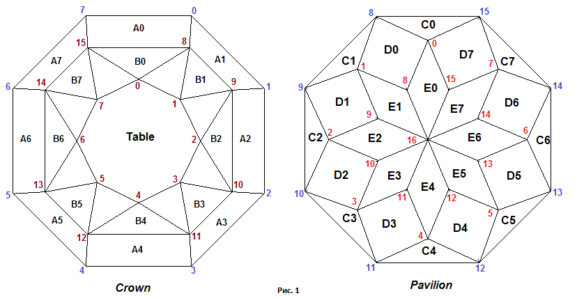
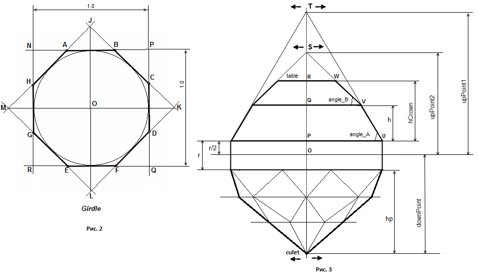

Создадим еще один вариант многогранника октагон. Сделаем следующие изменения:
В качестве рундиста будем использовать правильный восьмиугольник. Следовательно параметров
corner_break_angle и corner_break_ratio в СДМ больше не будет.
Введем возможность смещения в горизонтальной плоскости верхнего и нижнего ярусов короны. С этой
целью в СДМ введем параметры table_dx и table_dy для изменения положения
верхнего яруса короны. Для изменения положения нижнего яруса введем параметры h2h_dx
и h2h_dx. Значение угла angle_A0 будет задавать наклон сразу всех граней нижнего
яруса короны, а значение угла angle_B0 будет задавать наклон всех граней верхнего яруса.
Объединим две треугольные грани D0-1 и D0-2 в одну четырехугольную грань D0. Также поступим с
остальными гранями этого яруса павильона. Сделаем возможным смещения в горизонтальной плоскости калетты многогранника.
Для этого введем в СДМ параметры culet_dx и culet_dy.
Углы наклона граней C0 - C7 больше задавать не будем, но будем задавать углы наклона граней D1 - D7
и граней E0 - E7 при помощи параметров angle_D и angle_E соответственно.
Нумерация вершин и обозначение граней модели приведены на рисунке 1. 
СДМ многогранника октагон для данного варианта его построения включает в себя следующие параметры:
var DEGREE = 0.01745329251994; // величина углового градуса // Рундист var r = 0.02; // толщина рундиста // Корона var hCrown = 0.21; // высота короны var t = 0.3; // размер площадки var angle_B = 39*DEGREE; // верхний угол короны (одинаковый для для граней B0 - B7) var angle_A = 62*DEGREE; // нижний угол короны (одинаковый для всех граней A0 - A7) var H2H = 0.5; // Отношение высоты нижней части короны ко всей ее высоте var table_dx = 0.00001; // смещение верхнего яруса короны по оси X var table_dy = 0.00001; // смещение верхнего яруса короны по оси Y var h2h_dx = 0.00001; // смещение нижнего яруса короны по оси X var h2h_dy = 0.00001; // смещение нижнего яруса короны по оси Y // Павильон var hp = 0.67; // глубина павильона var angle_D = 65*DEGREE; // угол наклона граней D0 - D7 var angle_E = 43*DEGREE; // угол наклона граней E0 - E7 var culet_dx = 0.00001; // смещение калетты по оси X var culet_dy = 0.00001; // смещение калетты по оси Y
Так как рундист является правильным восьмиугольником, то его ширина и длина равны по величине
и поэтому параметр lw в СДМ отсутствует.
Расчет координат вершин граней модели как всегда начнем с рундиста. Рундист многогранника октагон показан на рисунке 2.
Правильный восьмиугольник, в общих чертах, определяется следующим образом.
Построим квадрат NPQR. Затем строим квадрат MJKL повернутый
относительно первого квадрата на 45 градусов. Точки пересечения квадратов определят положение вершин восьмиугольника.
Исходный текст функции InitGirdle определяющий координаты вершин рундиста:
var girdle = [16]; // вспомогательный массив для хранения координат вершин рундиста
.........................
.........................
function InitGirdle()
{
// Координаты вершин рундиста.
var d = Math.sqrt(0.5*0.5 + 0.5*0.5); // distance OP
var line_JK = new Line2D(new Point2D(0.0, d), new Point2D(d, 0.0));
var line_NP = new Line2D(new Point2D(-0.5, 0.5), new Point2D(0.5, 0.5));
var line_QP = new Line2D(new Point2D(0.5, -0.5), new Point2D(0.5, 0.5));
var B = line_JK.IntersectionTwoLines(line_NP);
var C = line_JK.IntersectionTwoLines(line_QP);
// используем свойство симметрии рундиста
girdle[0] = new Point3D(B[0], B[1], r/2);
girdle[1] = new Point3D(C[0], C[1], r/2);
girdle[2] = new Point3D( girdle[1][0], - girdle[1][1], r/2);
girdle[3] = new Point3D( girdle[0][0], - girdle[0][1], r/2);
girdle[4] = new Point3D(- girdle[3][0], girdle[3][1], r/2);
girdle[5] = new Point3D(- girdle[2][0], girdle[2][1], r/2);
girdle[6] = new Point3D(- girdle[1][0], girdle[1][1], r/2);
girdle[7] = new Point3D(- girdle[0][0], girdle[0][1], r/2);
girdle[8] = new Point3D( girdle[0][0], girdle[0][1], -r/2);
girdle[9] = new Point3D( girdle[1][0], girdle[1][1], -r/2);
girdle[10] = new Point3D( girdle[2][0], girdle[2][1], -r/2);
girdle[11] = new Point3D( girdle[3][0], girdle[3][1], -r/2);
girdle[12] = new Point3D( girdle[4][0], girdle[4][1], -r/2);
girdle[13] = new Point3D( girdle[5][0], girdle[5][1], -r/2);
girdle[14] = new Point3D( girdle[6][0], girdle[6][1], -r/2);
girdle[15] = new Point3D( girdle[7][0], girdle[7][1], -r/2);
}

Корона модели сотоит из граней расположенных на двух ярусах. При построении данного варианта многогранника
мы приняли допущение, что все грани как нижнего так и верхнего яруса многогранника имеют один и тот же угол
наклона. Для нижнего яруса он задается параметром angle_A, а для верхнего - параметром angle_B.
Обратимся к рисунку 3. Из него видно что прямые являющиеся продолжением нижних граней короны пересекаются
в точке T, а прямые являющиеся продолжением верхних граней - в точке S. Мы можем смещать
точку T в горизонтальной плоскости при помощи параметров table_dx и table_dy относительно
исходного значения лежащего на оси Z. При помощи параметров h2h_dx и h2h_dy можно сместить
в горизонтальной плоскости точку S.
Проведем восемь прямых каждая из которых проходит через точку T и одну из восьми вершин рундиста 0 - 7. Затем построим горизонтальную плоскость на уровне первого яруса граней короны. Тогда те точки, в которых происходит протыкание прямыми этой плоскости, определят положение вершин короны 8 - 15.
Для нахождения вершин короны 0 - 7 поступим следующим образом. Сначала найдем четыре точки лежащие посередине отрезков соединяющих вершины короны 15 и 8, 9 и 10, 11 и 12, 13 и 14. Через эти точки иточку S проведем четыре прямые. Тогда точки протыкания этими прямыми горизонтальной плоскости, лежащей на уровне площадки, определят положение вершин 0, 2, 4 и 6 короны.
Проведем прямые через вершины 15 и 8 а также 9 и 10 короны (имеем в виду прекции этих прямых на горизонтальную плоскость). Затем проведем через точку пересечения этих прямых и точку S еще одну прямую. Тогда та точка, где эта последняя прямая проткнет плоскость, лежащую на уровне площадки, окажется тем самым местом где находится вершина 1 короны. Таким же образом найдем положение вершин 3, 5 и 7 короны.
Ниже приведен исходный текст расчета положения вершин короны:
// Рассчитываем горизонтальную плоскость plane_H2H лежащую на высоте hCrown*H2H + r/2
var plane_H2H = new Plane3D();
plane_H2H.CreatePlaneNormalDistOXYZ(Z1, hCrown*H2H + r/2);
// точка T
var upPoint1 = 0.5 * Math.tan(angle_A) + r/2;
var T = new Point3D(h2h_dx, h2h_dy, upPoint1);
// рассчитываем координаты вершин короны 8 - 15 как
// точки пересечения прямой с плоскостью
for (i = 0; i < 8; i++)
{
var line = new Line3D(T, girdle[i]);
crown[i+8] = line.IntersectionLinePlane(plane_H2H);
}
// Рассчитываем горизонтальную плоскость plane_Table лежащую на высоте площадки
var plane_Table = new Plane3D();
plane_Table.CreatePlaneNormalDistOXYZ(Z1, hCrown + r/2);
// точка S
var upPoint2 = crown[8][1] * Math.tan(angle_B) + hCrown*H2H + r/2;
var S = new Point3D(table_dx, table_dy, upPoint2);
// Восемь вспомогательных точек для нахождения вершин короны лежащих на уровне площадки
var temp_points = [8];
temp_points[0] = new Point3D((crown[8][0] + crown[15][0]) / 2, (crown[8][1] + crown[15][1]) / 2, hCrown*H2H + r/2);
temp_points[1] = new Point3D((crown[9][0] + crown[8][0]) / 2, (crown[9][1] + crown[8][1]) / 2, hCrown*H2H + r/2);
temp_points[2] = new Point3D((crown[10][0] + crown[9][0]) / 2, (crown[10][1] + crown[9][1]) / 2, hCrown*H2H + r/2);
temp_points[3] = new Point3D((crown[11][0] + crown[10][0]) / 2, (crown[11][1] + crown[10][1]) / 2, hCrown*H2H + r/2);
temp_points[4] = new Point3D((crown[12][0] + crown[11][0]) / 2, (crown[12][1] + crown[11][1]) / 2, hCrown*H2H + r/2);
temp_points[5] = new Point3D((crown[13][0] + crown[12][0]) / 2, (crown[13][1] + crown[12][1]) / 2, hCrown*H2H + r/2);
temp_points[6] = new Point3D((crown[14][0] + crown[13][0]) / 2, (crown[14][1] + crown[13][1]) / 2, hCrown*H2H + r/2);
temp_points[7] = new Point3D((crown[15][0] + crown[14][0]) / 2, (crown[15][1] + crown[14][1]) / 2, hCrown*H2H + r/2);
// рассчитываем координаты вершин короны 0 - 7
for (i = 0; i < 8; i++)
{
var line = new Line3D(S, temp_points[i]);
crown[i] = line.IntersectionLinePlane(plane_Table);
}
В приведенной программе при наведении курсора мыши на конкретную грань в панели управления отображается наклон этой грани и ее азимут. Если при помощи параметров, задающих смещение точек T и S, изменить их положение то можно увидеть, что азимуты граней A0 - A7 и B0 - B7 не изменятся. Можно мысленно представить, что мы зажимаем пальцами виртуальные вершины T и S и двигаем эти вершины влево, вправо, вперед и назад. Если допустить, что многогранник "пластичен", то мы увидим, что будут меняться только наклоны граней короны, но направление линий пересечения плоскостей, в которых они лежат, с горизонтальной плоскостью OXY (азимуты граней) не подвергнутся изменению.
Небольшое замечание.
Может возникнуть вопрос - почему начальные значения смещений не равняются нулю, а заданы равными очень малой ведичине?
В процессе работы над программой я обнаружил, что при исходном значении параметров точно равными нулю, при помощи
dat.GUI можно совершенно правильно менять значения параметров, но синий горизонтальный столбик в панели
управления почему-то соответствующим образом не изменяет своего размера, а остается неизменным по длине.
Если задать исходные значения параметров не равными нулю, то все работает нормально.
Построение павильона в данном варианте многогранника октагон осуществим следующим образом.
На первом этапе определим плоскости в которых лежат четырехугольные грани D0 - D7.
Азимут грани D0 зададим по направлению прямой проходящей через вершины рундиста 9 и 15,
азимут грани D1 - по направлению прямой проходящей через вершины рундиста 8 и 10.
Похожим образом зададим азимуты граней D2, D3, D4, D5, D6 и D7.
Наклон граней D0 - D7 задается параметром (одним для всех этих граней) angle_D
При определении плоскостей в которых лежат грани D0 - D7 учтем, что эти плоскости проходят
через вершины рундиста 8 - 15.
// верхние четырехугольные грани павильона D0 - D7
var planes_up = [8];
var D0 = new Plane3D();
D0.CreateInclinePlane(angle_D, girdle[9], girdle[15], girdle[8]);
planes_up[0] = D0;
var D7 = new Plane3D();
D7.CreateInclinePlane(angle_D, girdle[8], girdle[14], girdle[15]);
planes_up[7] = D7;
// создаем плоскости (planes_up) в которых лежат грани D1 - D6
for (i = 1; i < 7; i++)
{
var plane = new Plane3D();
plane.CreateInclinePlane(angle_D, girdle[8 + i + 1], girdle[8 + i - 1], girdle[8 + i]);
planes_up[i] = plane;
}
На втором этапе найдем плоскости в которых лежат четырехугольные грани E0 - E7.
Азимуты этих плоскостей совпадают с азимутами граней рундиста под которыми лежат эти
плоскости. Наклон всех плоскостей в которых лежат грани E0 - E7 задается параметром angle_E.
Все указанные плоскости проходят через калетту многогранника. Положение калетты в горизонтальной плоскости задается
параметрами culet_dx и culet_dy:
pavil[16] = new Point3D(culet_dx, culet_dy, -r/2 - hp); // калетта
// восемь нижних четырехугольных граней павильона E0 - E7
var planes_down = [8];
var E0 = new Plane3D();
E0.CreateInclinePlane(angle_E, girdle[8], girdle[15], pavil[16]);
planes_down[0] = E0;
// создаем плоскости (planes_down) в которых лежат грани E1 - E7
for (i = 1; i < 8; i++)
{
var plane = new Plane3D();
plane.CreateInclinePlane(angle_E, girdle[i+8], girdle[8 + i - 1], pavil[16]);
planes_down[i] = plane;
}
На третьем этапе определим положение вершин павильона 0 - 7 как точки пересечения трех плоскостей
с помощью функции IntersectionThreePlanes:
pavil[0] = planes_up[0].IntersectionThreePlanes(planes_down[0], planes_up[7]); pavil[1] = planes_up[1].IntersectionThreePlanes(planes_down[1], planes_up[0]); pavil[2] = planes_up[2].IntersectionThreePlanes(planes_down[2], planes_up[1]); pavil[3] = planes_up[3].IntersectionThreePlanes(planes_down[3], planes_up[2]); pavil[4] = planes_up[4].IntersectionThreePlanes(planes_down[4], planes_up[3]); pavil[5] = planes_up[5].IntersectionThreePlanes(planes_down[5], planes_up[4]); pavil[6] = planes_up[6].IntersectionThreePlanes(planes_down[6], planes_up[5]); pavil[7] = planes_up[7].IntersectionThreePlanes(planes_down[7], planes_up[6]);
На четвертом этапе определим положение вершин павильона 8 - 15 как точки пересечения тех же плоскостей
что и на третьем этапе, но используемых в функции IntersectionThreePlanes несколько иным способом:
pavil[8] = planes_up[0].IntersectionThreePlanes(planes_down[0], planes_down[1]); pavil[9] = planes_up[1].IntersectionThreePlanes(planes_down[1], planes_down[2]); pavil[10] = planes_up[2].IntersectionThreePlanes(planes_down[2], planes_down[3]); pavil[11] = planes_up[3].IntersectionThreePlanes(planes_down[3], planes_down[4]); pavil[12] = planes_up[4].IntersectionThreePlanes(planes_down[4], planes_down[5]); pavil[13] = planes_up[5].IntersectionThreePlanes(planes_down[5], planes_down[6]); pavil[14] = planes_up[6].IntersectionThreePlanes(planes_down[6], planes_down[7]); pavil[15] = planes_up[7].IntersectionThreePlanes(planes_down[7], planes_down[0]);
Если при помощи параметров culet_dx и culet_dy задать смещение калетты,
то азимуты граней павильона не изменятся.